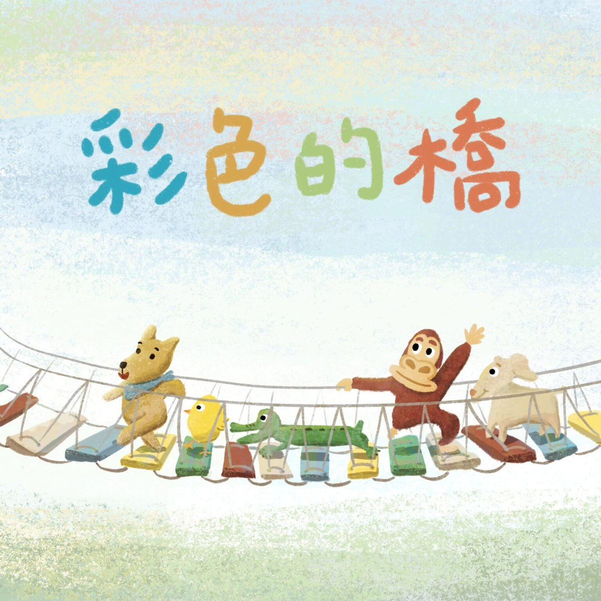

完整版廣播劇，含配音與音效，供角色聲音表情參考。
小狗汪汪住在大海旁邊的藍色小房子裡，他最喜歡藍色了——家裡的床、桌椅、沙發全都是藍色的。有一天，門口突然出現一座黃色的橋，汪汪提著藍色油漆想把它漆成藍色，卻被蓋橋的小雞攔了下來。
為了找到一座藍色的橋，汪汪沿著河往上游走：沼澤裡有鱷魚的綠色橋、叢林裡有紅毛猩猩的紅色橋，每一座都是主人自己喜歡的顏色，誰也不肯讓汪汪亂漆。一路上還加入了好奇的燕子和螢火蟲，隊伍越走越熱鬧。
走到山上，他們終於看到一座白色的橋——卻已經被湍急的河水沖斷了！河邊的小山羊回不了家，急得大哭。天黑了，大家決定一起動手：螢火蟲照亮、紅毛猩猩搬木頭、鱷魚咬斷木材、汪汪和小雞綁繩子、燕子飛越河面牽線……一整晚的合作之後，一座堅固的吊橋完成了。最後大家各自漆上自己喜歡的顏色，這座橋，就成了世界上最漂亮的彩色的橋。
哈囉，我們來一起說故事囉！今天要說的故事叫做《彩色的橋》，改編自阿等的《藍色的橋》。
（海鷗聲、舒緩的海浪聲）
在一片藍色的大海旁邊，有一棟藍色的小房子，小房子裡住著一隻小狗，他叫做汪汪。汪汪最喜歡藍色了，因為那是大海的顏色，也是天空的顏色，只要看到藍色，汪汪就會很開心，所以他家裡的床、桌子還有椅子跟沙發，全部都是藍色的。
有一天，汪汪拉開他的藍色窗簾，看向窗外，卻發現——
汪汪：咦！那裡怎麼多了一座黃色的橋！？
汪汪提著一桶藍色的油漆走到橋邊，他想要把黃色的橋變成藍色的，就在汪汪要漆下去的時候——
小雞：等一下！你在做什麼！？
小雞叫住了汪汪。
汪汪：我想要把這座橋漆成藍色的，這樣比較漂亮。
小雞：可是這座橋是我蓋的啊，你不能亂漆！
汪汪：蛤～～～～可是我真的好想要一座藍色的橋！
汪汪之前從來沒想過他要有一座橋，可是，當他看到小雞有黃色的橋的時候，他就也好想要有藍色的橋。
小雞：沿著這條河往上游走，我記得有別座橋，說不定是藍色的喔！走吧！我陪你去找。
於是，汪汪和小雞離開了海邊，他們沿著河往上游走，走到一片沼澤，在那裡，他們看到了——
小雞：你看！是橋！
汪汪：可是是綠色的⋯⋯還好我帶著油漆！
就在汪汪要把藍色油漆漆到綠色橋上的時候——
鱷魚：等一下！你在做什麼！？
鱷魚叫住了汪汪。
汪汪：我、我、我、我想要把這座橋⋯⋯漆成藍色的，這樣比較漂亮。
鱷魚大大的嘴巴裡有著尖尖的牙齒，汪汪覺得好害怕，但他還是勇敢地說出他想要一座藍色的橋。
鱷魚：可是這座橋是我蓋的啊，你不能亂漆！不過，再往上游走，有別座橋，說不定是藍色的喔！
於是，汪汪、小雞還有鱷魚離開了沼澤，他們沿著河往上游走，走到一片叢林，在那裡，他們看到了——
小雞、鱷魚：你看！是橋！
汪汪：可是是紅色的⋯⋯還好我帶著油漆！
小雞：你不要又亂漆啦！
鱷魚：對啊，要問問看這是誰的橋！
一隻紅毛猩猩從樹上爬下來。
紅毛猩猩：喔，這是我的橋啊！怎麼了嗎？
汪汪：我可以把它漆成藍色的嗎？
紅毛猩猩：不行啊！我就是喜歡紅色，我才會蓋紅色的橋啊！你想要藍色的橋，那你就自己蓋呀！
汪汪：可是我們家門口沒有地方給我蓋橋，我真的好想要藍色的橋啦～～～你們誰的橋給我漆成藍色的嘛～～
汪汪躺在地上耍賴，但是小雞、鱷魚還有紅毛猩猩還是鼓勵他
小雞：我們再往上游走走看吧！
鱷魚：說不定有橋喔！
紅毛猩猩：說不定是藍色的喔！
汪汪只好站起來繼續走。他們走了好久好久，在路上遇到了好多燕子和螢火蟲。
燕子：小狗、小雞、鱷魚還有紅毛猩猩，這是什麼奇怪的組合啊？
螢火蟲A：你們在做什麼呢？
汪汪：我們在找藍色的橋啊！
螢火蟲B：橋？那是什麼東西？
螢火蟲C：不知道，沒聽過。
汪汪：橋就是⋯⋯就是如果有一條河在中間，我們走不過去，游泳又太累或是太危險的話，就要蓋橋，這樣就可以走橋上面過去啊！
螢火蟲A：喔，難怪我們沒聽過
螢火蟲B：因為我們用飛的就好，不用走路～嘿嘿
螢火蟲C：不過我們也好想看看橋長什麼樣子喔，我們可以一起去看看嗎？
汪汪：當然可以啊！
就這樣，汪汪、小雞、鱷魚還有紅毛猩猩繼續往河流的上游走，燕子和螢火蟲也用飛的跟在旁邊，他們一直走一直走、一直飛一直飛，最後，到了山上，在那裡，他們看到了——
（湍流水聲）
小雞、鱷魚、紅毛猩猩：你看！是橋！
汪汪：可是是白色的，而且⋯⋯而且！它快斷了！！
沒錯，山上的水流太強了，河流的水一直沖一直沖，白色小橋就這樣被水沖斷了！
小山羊：（爆哭）哇啊～～媽媽～～～～～
有一隻小山羊站在河的這一邊大哭，他想要走到河的另外一邊。
山羊媽媽：小山羊你不要急，現在很危險，你不要跑到水裡！你在那邊等一下，媽媽找人來把橋修好！
山羊媽媽站在河的另一邊，她很擔心，要是小山羊跑到河裡，就會被水沖走！可是，太陽下山了，天空變得越來越黑，小山羊好害怕
小山羊：媽媽～～～～
汪汪：小山羊好可憐，我們來幫忙他吧！
於是，汪汪他們就開始蓋橋。螢火蟲發著光飛來飛去，他們幫忙把路照亮。
眾螢火蟲：嘿～嘿～飛飛飛～
紅毛猩猩搬來了很多很多木頭。
紅毛猩猩：嘿咻！
鱷魚張大嘴巴，用尖尖的牙齒咬下，把木頭切成一段一段的。
鱷魚：啊！啊！啊！
然後小雞和汪汪找來了很多繩子，他們用繩子牢牢地綁住每一塊木頭。
小雞：來！
汪汪：嘿咻～
然後，燕子們咬著繩子，飛去河的另一邊。
燕子A：嗚⋯⋯好重啊～
燕子B：加油！加油！
燕子C：快到了！
最後，山羊媽媽拉著繩子，綁在柱子上面。太陽出來了，經過一整個晚上的努力，堅固的吊橋終於完成了！小山羊跑過吊橋，抱著山羊媽媽。
小山羊：媽媽～～～
山羊媽媽：沒事了，沒事了。汪汪，真是謝謝你們！
汪汪：不客氣～
小山羊：那我們可以幫橋塗顏色嗎？
山羊媽媽：可以啊，你想塗什麼顏色呢？
小山羊：我想塗白色！那你們呢？汪汪？
汪汪：我？我想塗藍色！！
小雞：我想要黃色！
鱷魚：綠色！
紅毛猩猩：紅色！
就這樣，小山羊、汪汪、小雞還有鱷魚和紅毛猩猩一起，把這座橋漆上各種顏色。雖然最後小狗汪汪還是沒有一整座藍色的橋，但是他更喜歡這座和好朋友一起蓋的橋。他們會約好一起在這裡玩、一起保護這座橋，如果以後有新的朋友，他們也可以在橋上漆自己喜歡的顏色，這樣，這座橋就會變成世界上最漂亮的彩色的橋。
這就是今天的故事《彩色的橋》，感謝阿等的提供喔！